Interaction1
UMLInteraction
Learn Together
::
Model
::
Collaboration8
::
Interaction1
Description
none
Diagrams

SequenceClientProfile
Fragments
Update User by king of UI
Participants
Lifeline1: AdminUI
Lifeline2: ApplicationUI
Lifeline3: ObservableUser
Lifeline4: AdaptableUser
Lifeline5: User
Messages
handleUpadateAdminUser (Lifeline1→Lifeline5)
handleUpadateAdminUser (Lifeline5→Lifeline3)
handleUpadateAdminUser (Lifeline3→Lifeline4)
sendUpdateAdminUserToGeneralServer (Lifeline4→Lifeline4)
HandleAnswerUser (Lifeline4→Lifeline3)
HandleAnswerUser (Lifeline3→Lifeline5)
display (Lifeline5→Lifeline1)
Properties
Name
Value
name
Interaction1
stereotype
null
visibility
public
isReentrant
true
Owned Elements
SequenceClientProfile